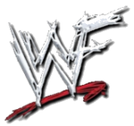
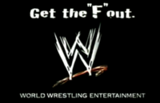

WWE
INTRODUCTION

World Wrestling Entertainment, Inc. (WWE) (Originally be known as World Wrestling Federation or WWF) is an American publicly traded, privately controlled entertainment company dealing primarily in professional wrestling, with major revenue sources also coming from film, music, product licensing, and direct product sales. Founded by Jess McMahon and Toots Mondt in 1952, it is currently the largest professional wrestling promotion in the world, reaching 13 million viewers in the U.S. and broadcasting its shows to more than 150 countries. Like other professional wrestling promotions, WWE's shows do not feature legitimate sporting contests. Instead, its programs feature storyline-driven combat sport matches with predetermined outcomes and fighting maneuvers that are worked, all promoted as legitimate bouts.
Vince McMahon is the majority owner, chairman and chief executive officer (CEO) of the company. Together with his wife Linda McMahon, and their children Shane McMahon and Stephanie McMahon, the McMahons hold approximately 70% of WWE's economic interest and 96% of the voting power in the company. The company's headquarters are located in Stamford, Connecticut with offices in New York City, Los Angeles, London, Shanghai, Tokyo, Singapore, and Mumbai. The company previously bore the names, World Wide Wrestling Federation (WWWF), World Wrestling Federation (WWF) and World Wrestling Federation Entertainment. Since 2002, the company has been recognised as World Wrestling Entertainment. This was later simplified to WWE in 2011.
As the Monday Night Wars continued between Monday Night Raw and WCW's Monday Nitro, the WWF would transform itself from a family-friendly product into a more adult oriented product, known as The Attitude Era. The era was spearheaded by Vince McMahon and head writer Vince Russo, who drastically changed the way professional wrestling television was written.

The WWF logo used during "The Attitude Era" (1997-2001)
The fans of WWF seemed to favor what was posed to them as the bad guy instead of the good guy. The creative changes made by the company's writers saw wrestling take on a "street fighting", "bad attitude" approach. However, despite this revolutionary change by the company, WWF continued to lose much of its leading talent to rival promotion, WCW throughout 1996 and 1997. 1997 ended with McMahon facing real-life controversy following Bret Hart's controversial departure from the company, later known as the Montreal Screwjob. This resulted in major financial losses and plummeted ratings with many of McMahon's employees, wrestling critics, and wrestling fans turning against him. This proved to be one of several founding factors in the launch of the Attitude Era as well as the creation of McMahon's on-screen character, "Mr. McMahon"; a dictatorial and fierce ruler who favored heels over faces.
Prior to the Montreal Screwjob that took place at the 1997 Survivor Series, former WCW talent was being hired by the WWF, including Stone Cold Steve Austin, Mankind and Vader. Steve Austin was slowly brought in as the new face of the company despite being promoted as an anti-hero, starting with his Austin 3:16 speech shortly after defeating Jake Roberts in the tournament finals at the King of the Ring pay-per-view in 1996. The creation of the Mr. McMahon character soon led to the Austin vs. McMahon feud, the central storyline during the Attitude Era. During the rivalry, McMahon founded two heel factions: The Corporation and The Corporate Ministry to help try and defeat Austin. The feud even involved former boxing champion, Mike Tyson, which helped give the company mainstream media attention and a significant increase in ratings.

In March 2002, roughly two months before the name change, WWE decided to create two separate rosters, Raw and SmackDown! due to the overabundance of talent left over from the Invasion storyline. This is known as the WWE Brand Extension. Despite much of the originally drafted talent departing by 2004, WWE has continued to separate the shows, taking on younger talent, and holds a Draft Lottery every year. On May 26, 2006, WWE announced the relaunch of Extreme Championship Wrestling as a WWE brand. The new ECW program aired internationally and on Tuesday nights on Syfy in the United States until February 16, 2010.
In 2000, the World Wide Fund for Nature (also trademarked WWF), an environmental organization, sued World Wrestling Federation Entertainment Inc. in the United Kingdom. The Law Lords agreed that the promotion company had violated a 1994 agreement as Titan Sports which had limited the permissible use of the WWF trademark in Europe, particularly in merchandising. The World Wide Fund and World Wrestling Federation used the initials since March 1979. The last televised event to market the WWF logo was the UK based pay-per-view Insurrextion 2002. On May 5, 2002, the company launched its "Get The F Out" marketing campaign and changed all references on its website from "WWF" to "WWE", while switching the URL from WWF.com to WWE.com. The next day, a press release announced the official name change from World Wrestling Federation Entertainment, Inc. to World Wrestling Entertainment, Inc., or WWE, and the change was publicized later that day during a telecast of Monday Night Raw, which was broadcast from the Hartford Civic Center in Hartford, Connecticut.
Following the case, the use of the WWF "scratch" logo became prohibited on all WWE properties. Additionally, past references to the WWF trademark and initials in 'specified circumstances' became censored. Despite litigation, WWE was still permitted use of the original WWF logo, which was used from 1979 through 1994, as well as the "New WWF Generation" logo, which was used from 1994 through 1998. Furthermore, the company could still make use of the full "World Wrestling Federation" and "World Wrestling Federation Entertainment" names without consequence. In 2003, WWE won a limited decision to continue marketing certain classic video games from THQ and Jakks Pacific that contained the WWF "scratch" logo. However, the packaging on those games had all WWF references replaced with WWE.
WWE logo, retrofitted as the classic logo
Starting with the 1,000th episode of Raw in July 2012, the WWF "scratch" logo is no longer censored in archival footage due to WWE reaching a settlement with the World Wide Fund for Nature. In addition, the WWF initials are no longer censored when spoken or when written in plain text in archival footage. Since then, full-length matches and other segments featuring the WWF initials and "scratch" logo have been added to the WWE website and the WWE Classics on Demand service. This also includes WWE Home Video releases since October 2012 starting with the re-release of Brock Lesnar: Here Comes The Pain. In exchange, WWE is no longer permitted to use the WWF initials or logo in any new, original footage, with any old-school logos for retro-themed programming now using the original WWF logo, but modified without the F.
SOURCE:
BACK